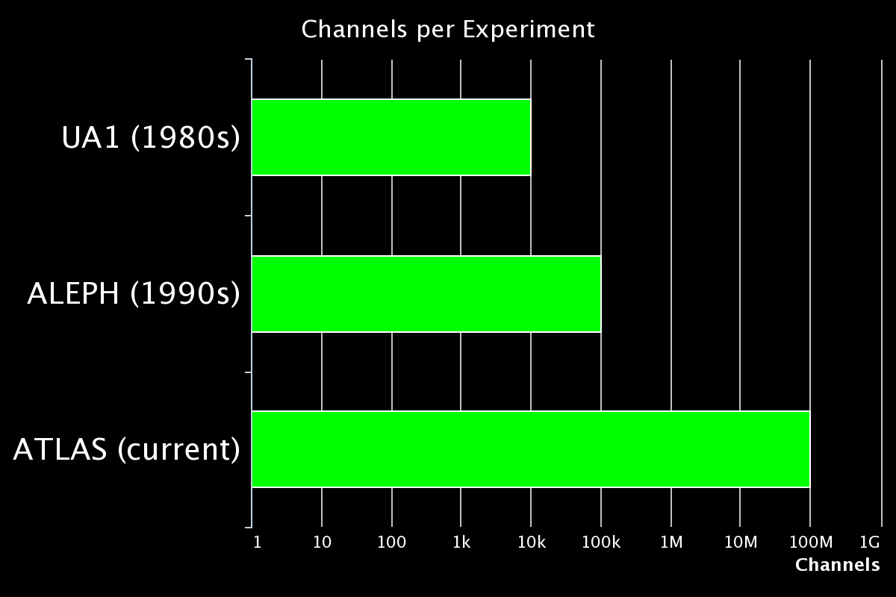

Coding for Science
addressing the software crisis in the sciences
 |
 |
 |
 |
If software really did eat the world

we still don't really teach scientists how to code

- Critical lack of transparency & repeatability
- Massive time & budget wasted reinventing wheels instead of building on past work
- Significant unnecessary frustration for scientists
Analytic Repeatability & Transparency
- Code must be runnable, not just available
- Means we have to distribute dependencies, configurations and data as well as the code itself
- Containerization packages all this in runnable, shareable, archivable objects
Coding for Reuse
- Code standards are rarely taught and never enforced for students; emphasis is on shortest time to results
- Short term planning leads to spaghetti scripting
- Code reuse relies on modular, semantic, falsifiable architecture.
- Reusing code results in fastest time to results and highest quality code

Repeatable Coding for Scientists
- Goal: cherry pick tools and techniques from private industry SW development and ops,
and repurpose them for scientific audiences. - Audience: can be tailored to undergrad, grad, or pro scientists, all disciplines welcome
- Topics:
- Writing, testing and packaging reusable code (probably in Python)
- Containerizing software with Docker (and orchestrating with Kubernetes?)
- Successful code collaboration with Git and GitHub
- Other topics tbd (CI? Data standards? Others?)
- Forum: TBD, needs a home! Contact mills.wj@gmail.com